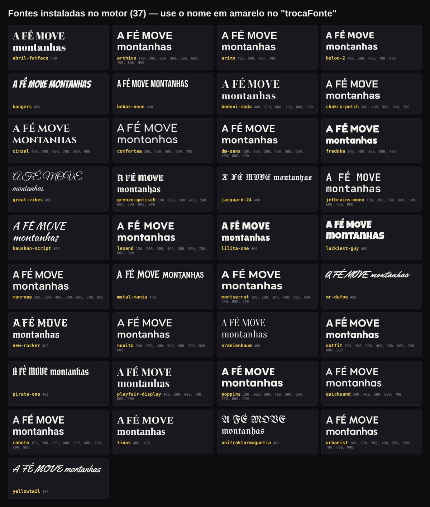

No computador ou na nuvem, pelo navegador ou pelo celular. Instale as skills, digite /comecar e conte a sua ideia.
Roteiro, voz, legenda animada, efeitos, música e o texto do post. Tudo numa conversa com o Claude Code, sem abrir editor nenhum.
Quer a legenda baixinha da Sample Yellow, mas com a letra gótica da Street? Pode. Quer dois ou três efeitos ao mesmo tempo? Pode também. Monte aqui e veja a frase que você manda para o Claude.
O vídeo mostra o estilo da legenda. A fonte e os efeitos que você escolher entram por cima, no seu vídeo.
Cortar, sincronizar legenda palavra por palavra, achar música, exportar de novo.
O template que passa mil vezes por dia. Quem rola a tela nem para.
Você sabe o assunto, mas a abertura que prende nos 2 primeiros segundos não sai.
Quem posta todo dia aprende rápido o que funciona. Quem posta quando sobra tempo, para.
Toque numa resposta. Seja qual for, aqui o seu trabalho é contar a ideia e dizer "aprovado".
Um trecho com a fala original. A cada poucos segundos muda a legenda, ou muda o efeito. É isso que você aplica com um comando.
Street, Sample Yellow, Rocks, Samplerocks, Mistury, Dinâmica, Invisible, 3D Invisível e Red Sharp. Cada palavra aparece no tempo exato da fala.
Filme antigo, Mangá, Sonho, VHS, Sombrio, Cinema e Rua. Use um ou vários juntos, com qualquer legenda.
"Canal de motivação com voz grave." Ele monta o seu padrão de legenda, fonte, efeitos e formato.
3 roteiros com 3 ganchos de abertura cada, no tamanho certo para Shorts.
Pelo ElevenLabs conectado ao Claude, ou uma voz de personagem do Fish Audio.
GIFs, fotos e cenas da internet, com opções para você escolher e a fonte anotada.
Legenda, fonte, efeitos e trilha. Ajuste falando: "legenda mais à esquerda".
Vídeo final com título, legenda, descrição, tags e o melhor horário.
Monta o padrão do canal.
3 roteiros, 3 ganchos cada.
ElevenLabs ou Fish Audio.
Acha GIFs, fotos e cenas.
Troca a letra de qualquer legenda.
Título, legenda, tags, horário.
Gira sozinho. Passe o dedo ou o mouse para girar.
/street/sample-yellow/red-sharp/mistury/rocks/legenda-3d-invisivel/samplerocks/legenda-dinamica/invisibleE qualquer outra do Google Fonts.

Cada legenda tem a sua animação, posição e cor. Com /fontes você mantém tudo isso e só troca a letra. Na Street e na Red Sharp, dá para trocar cada parte separada.
"Faz com a /sample-yellow, só que com a fonte pirata-one."
Um ou vários juntos, com qualquer legenda.
/efeito-filme-antigo/efeito-vhs/efeito-sombrio/video-gifGIF em loop sem emenda, ampliado com IA, legenda ao lado do personagem.
/video-narracaoRoteiro narrado sobre cenas de fundo, com a referência no topo.
/video-falaÁudio original e legenda ao lado de quem fala, nunca no rosto.
/edit-musicaDigite "Goku" ou "Neymar": ele anima artes que já existem na batida.
/video-longoHorizontal para o YouTube, de 10 a 30 minutos, com capítulos.
/aestheticImagens paradas que ganham vida em quadrinhos e cortes na batida.
Cada estilo foi criado e aprovado vídeo a vídeo num canal que posta todo dia no YouTube, Instagram, TikTok e Facebook. O que você corrige uma vez, ele não erra de novo.
"Versículos narrados com a referência no topo."
/video-narracao + /sample-yellow
"Frases fortes, voz grave, clima pesado."
/red-sharp + /efeito-sombrio
"Edit do Itachi na batida de um phonk."
/edit-musica + /street
"Lances do Neymar com narração."
/edit-musica + /legenda-3d-invisivel
| Editar sozinho | Contratar editor | Editor no Piloto | |
|---|---|---|---|
| Seu tempo por vídeo | Horas no editor | Briefing, espera e revisão | Contar a ideia e aprovar |
| Roteiro | Você escreve | Normalmente não inclui | 3 propostas com 3 ganchos |
| Voz | Você grava | À parte | Gerada na conversa |
| Fundo (GIFs, cenas) | Você procura | Você manda | Ele busca e mostra opções |
| Estilo | Templates de aplicativo | Depende do editor | +40 mil combinações |
| Às 2 da manhã | Se você estiver acordado | Não | Sim |
No computador ou na nuvem, pelo navegador ou pelo celular. Instale as skills, digite /comecar e conte a sua ideia.
Passo a passo do Fish Audio, gratuito, com vozes de anime e narradores.
GIFs, fotos e cenas buscados na internet, com a fonte anotada.
Cada skill é independente. Um comando instala as escolhidas.
Acesso imediato · Garantia de 7 dias
Não. Você conversa em português com o Claude Code. As skills já trazem as regras de edição.
Dá. Qualquer legenda com qualquer fonte, e um ou vários efeitos juntos. Também dá para usar duas legendas no mesmo vídeo, por exemplo uma frase de impacto em Red Sharp dentro de um vídeo em Sample Yellow.
Dá. Pela versão do Claude Code na nuvem, você manda a ideia pelo app e recebe o vídeo no chat.
Não. O roteiro sai da sua ideia e a voz é gerada pelo ElevenLabs ou pelo Fish Audio. Se preferir, usa a sua voz.
Mande as suas ou deixe com a /buscar-midia: ela procura GIFs, fotos e cenas, mostra as opções e baixa a escolhida.
Com mais de 40 mil combinações de legenda, fonte e efeitos, e roteiro e voz próprios, cada canal fica com a sua cara.
O pacote edita o material que você escolher. Material de terceiros pode gerar reivindicação de direitos (Content ID) no YouTube; a escolha é sua.
Você tem 7 dias de garantia: se não for para você, pede o reembolso.